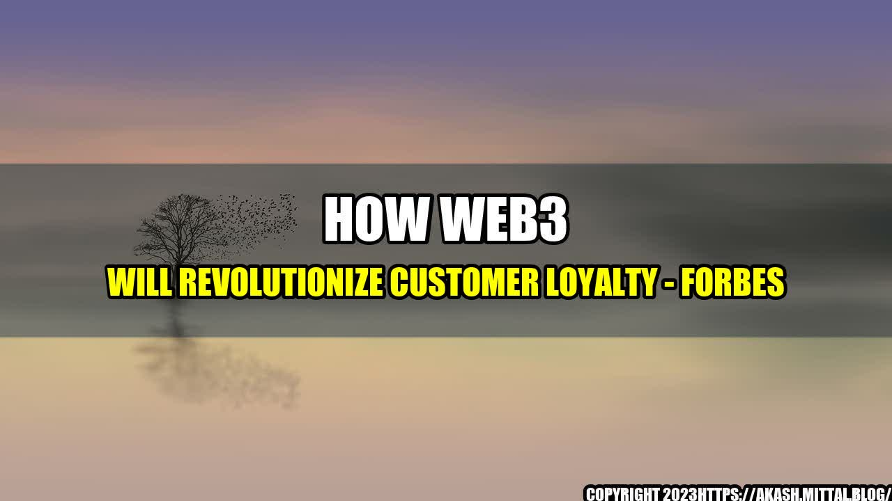

How Web3 Will Revolutionize Customer Loyalty
Imagine this scenario: You walk into your favorite coffee shop and the barista greets you by name, asks if you want your usual drink, and then gives you a free pastry because you've been a loyal customer for years. This kind of personal touch and appreciation is what customer loyalty is all about, and businesses are always looking for ways to foster and maintain it. However, with the rise of e-commerce and online shopping, building customer loyalty has become more challenging than ever. This is where Web3 comes in.

What is Web3?
Web3, also known as the decentralised web or the blockchain web, is the next generation of the internet. It is a peer-to-peer network that is decentralized and transparent. This means that there is no central authority controlling it, and all transactions are recorded on a public ledger that cannot be tampered with. Web3 allows for secure, trustless interactions between parties, without the need for intermediaries.
How Web3 can help with customer loyalty
Web3 has the potential to completely transform the way customer loyalty programs are managed. Here are some of the benefits:
- Transparency and trust: With Web3, customers can be sure that their loyalty points and rewards are stored securely and cannot be manipulated or lost. This builds trust and transparency between the business and the customer.
- Personalization: Web3 allows for a more personalized customer experience. Businesses can use customer data to tailor rewards and offers to each individual, based on their preferences and behavior.
- Interoperability: Web3 allows for interoperability between different loyalty programs. Customers can earn and use loyalty points across multiple businesses and platforms, creating a more unified customer experience.
Quantifiable examples
Web3 is still a relatively new concept, but there are already some real-world examples of how it is being used to revolutionize customer loyalty. Here are a few:
- Rakuten: Rakuten, a Japanese e-commerce company, has launched a Web3-based loyalty program called Rakuten Coin. Customers can earn and spend Rakuten Coins across multiple businesses within the Rakuten ecosystem, creating a seamless and versatile loyalty program.
- Sonder: Sonder, a boutique hotel chain, has created a Web3-based loyalty program that rewards guests for sharing feedback on social media. The more engagement a guest generates, the more rewards they earn, creating a more social and interactive loyalty experience.
- Swarm: Swarm is a decentralized platform that allows businesses to create their own custom loyalty tokens, which can be traded among customers and businesses. This creates a more flexible and customizable loyalty program that can be tailored to each business's specific needs.
Conclusion
In summary, Web3 will revolutionize customer loyalty by:
- Increasing transparency and trust
- Enabling personalization
- Facilitating interoperability
Curated by Team Akash.Mittal.Blog
Share on Twitter Share on LinkedIn